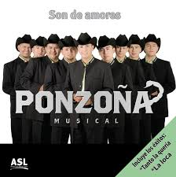
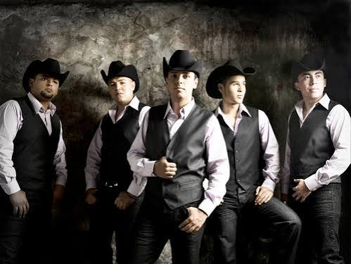
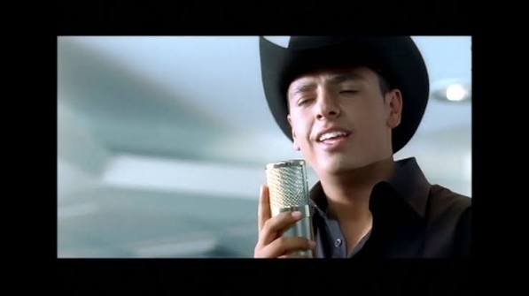
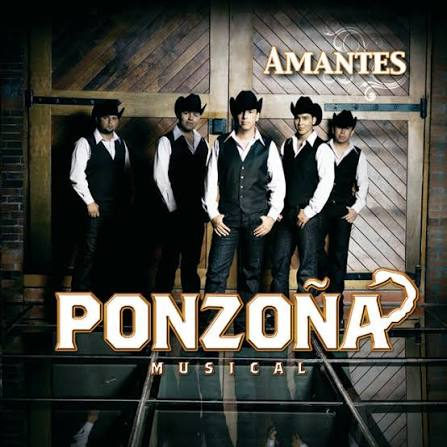

| FOTO | CANCION | LETRA | VIDEO |
|---|---|---|---|
 |
SON DE AMORES | Pero me han comentado que te han visto sola Llorando por las calles en altas horas Ay, como la loca, loca, loca Comentan que tu niño a ti te ha dejado Que no existe consuelo para tanto llanto Que solo una amiga está a tu lado No llores más, mi niña, niña, niña Son de amores, amores que matan Amores que ríen, amores que lloran Amores que amargan Son de amores, amores que engañan Amores que agobian, amores que juegan Amores que faltan Deja de llorar Y piensa que algún día un niño te dará Toda una fantasía eso y mucho más Porque tú no estás loca, loca, loca Deja de llorar Y sécate esas lagrimillas de cristal Que el tiempo volverá seguro a rescatar Toda una fantasía, fantasía Ponzoña Musical Y puro veneno, compa Y un saludo para Los Primos de Durango Comentan que ya no te pones esa ropa Que te favorecía y te hacía tan mona Y que esas ilusiones que tenías antes Se las tragó la luna, luna, luna Tú crees que eres la sombra de tu propia sombra Tú crees que eres la lluvia que chispea y agobia Piensa que tú vales más que esta historia Y no te veas sola, sola, sola Son de amores, amores que matan Amores que ríen, amores que lloran Amores que amargan Son de amores, amores que engañan Amores que agobian, amores que juegan Amores que faltan Deja de llorar Y piensa que algún día un niño te dará Toda una fantasía eso y mucho más Porque tú no estás loca, loca, loca Deja de llorar Y sécate esas lagrimillas de cristal Que el tiempo volverá seguro a rescatar Toda una fantasía, fantasía Perdona si pregunto por cómo te encuentras Pero me han comentado que te han visto sola Llorando por las calles en altas horas Ay, como la loca, loca, loca |
IR A VIDEO |
 |
TANTO LA QUERIA | ¿Por qué la vida pasa y pasa y te quiero a mi manera? Si me trataste como a un juguete sucio y abandonado Si no comprendes que el amor es algo más que besarnos Envidio a todo aquel que el amor ha encontrado Y lo mío un útil sol, sol que de eso ya me he cansado Solo quería adornar las noches con tu cara morena Y decirte que hay corazones que no sientan la tormenta Y a veces la miro y lloro y lloro Pensando en que pudo y no fue el final Ver a las nubes tapar las estrellas Estrellas que solo te quieren mirar Porque eres la cuna que mece sin hadas Porque eres la lluvia que no hace mojar Sin ti yo veía tardes de historias Historias que nunca quise ver acabar Tanto la quería Tanto que yo Por ella moría Eso bien lo sabe Dios Ella es la reina de mi inspiración Con la que yo sufro La musa de mi amor Busco en el recuerdo y no encuentro mi pasado Las campanas y más campanas que mi alma ha escuchado Tú sabes que hasta la última frontera te hubiera llevado Que los senderos de la vida hay que tomarlos con dos manos Y a veces la miro y lloro y lloro Pensando en que pudo y no fue el final Ver a las nubes tapar las estrellas Estrellas que solo te quieren mirar Porque eres la cuna que mece sin hadas Porque eres la lluvia que no hace mojar Sin ti yo veía tardes de historias Historias que nunca quise ver acabar Tanto la quería Tanto que yo Por ella moría Eso bien lo sabe Dios Ella es la reina de mi inspiración Con la que yo sufro La musa de mi amor ¿Por qué eres tan hermosa y a la vez tan difícil? ¿Por qué la vida pasa y pasa y te quiero a mi manera? |
IR A VIDEO |
| TANTO LA QUERIA | ¿Por qué la vida pasa y pasa y te quiero a mi manera? Si me trataste como a un juguete sucio y abandonado Si no comprendes que el amor es algo más que besarnos Envidio a todo aquel que el amor ha encontrado Y lo mío un útil sol, sol que de eso ya me he cansado Solo quería adornar las noches con tu cara morena Y decirte que hay corazones que no sientan la tormenta Y a veces la miro y lloro y lloro Pensando en que pudo y no fue el final Ver a las nubes tapar las estrellas Estrellas que solo te quieren mirar Porque eres la cuna que mece sin hadas Porque eres la lluvia que no hace mojar Sin ti yo veía tardes de historias Historias que nunca quise ver acabar Tanto la quería Tanto que yo Por ella moría Eso bien lo sabe Dios Ella es la reina de mi inspiración Con la que yo sufro La musa de mi amor Busco en el recuerdo y no encuentro mi pasado Las campanas y más campanas que mi alma ha escuchado Tú sabes que hasta la última frontera te hubiera llevado Que los senderos de la vida hay que tomarlos con dos manos Y a veces la miro y lloro y lloro Pensando en que pudo y no fue el final Ver a las nubes tapar las estrellas Estrellas que solo te quieren mirar Porque eres la cuna que mece sin hadas Porque eres la lluvia que no hace mojar Sin ti yo veía tardes de historias Historias que nunca quise ver acabar Tanto la quería Tanto que yo Por ella moría Eso bien lo sabe Dios Ella es la reina de mi inspiración Con la que yo sufro La musa de mi amor ¿Por qué eres tan hermosa y a la vez tan difícil? ¿Por qué la vida pasa y pasa y te quiero a mi manera? |
IR A VIDEO | |
 |
LA LOCA | su hogar unas nubes tendidas al sol, en sus miradas amor en su respuesta si,y para su dolor un solo fin, el se fue, sus cabellos pintados de gris ella dejo de cuidar las flores del jardin y le decian ven tenemos que vivir, y los muchachos del barrio le llamaban loca y unos hombres vestidos de blanco le dijeron ven y ella grito no señor ya lo ve yo no estoy loca estube loca ayer pero fue por amor, en el hospital en un banco al sol se le puede ver sonreir consultando su viejo reloj, pensando en que ha de venir aquel que se marcho y se llevo con el su corazon, no vendra el espera en sus nubes al sol,< en ese mundo de ayer que solo fue de los dos, en ese mundo que triunfo el amor, y los muchachos del barrio le llamaban loca y unos hombres vestidos de blanco le dijeron ven y ella grito no señor ya lo ve yo no estoy loca estube loca ayer pero fue por amor, y los muchachos del barrio le llamaban loca y unos hombres vestidos de blanco le dijeron ven y ella grito no señor ya lo ve yo no estoy loca estube loca ayer pero fue por amor, pero fue por amor,fue por amoooor. |
IR A VIDEO |  |
POR AMARTE ASI | Como un mar inquieto como un mar en calma Siempre tan lejana como el orizonte.... Gritando en el silencio tu nombre en mis labios Solo queda el eco de mis desengaños Sigo aqui en mis sueños de siguirte amando..... Sera.. sera como tu quieras pero asi sera Si aun tengo que esperarte siete vidas mas Me quedare colgado en este sentimiento..... Por amarte asi esa mi fortuna es ese mi castigo Sera que tanto amor acaso esta prohibido Me sigo aqui muriendo por estar contigo...... Por amarte asi.. a un paso de tu boca y sin poder besarla.. Tan cerca de tu piel y sin poder tocarla.. Ardiendo de deseo por cada mirada.. Por amarte asi ... por amarte asi por amarte......... Ponzoña musical Aun sigo caminando en esta cuerda floja Por ir tras de tus huellas convertido sombra Preso del amor que me negaste un dia.... Contando los segundos que pasan por verte Haciendote culpable de mi propia suerte Soñando hasta despierto por hacerte mia.... Sera.. sera como tu quieras pero asi sera Si aun tengo que esperarte siete vidas mas Me quedare colgado en este sentimiento..... Por amarte asi esa mi fortuna es ese mi castigo Sera que tanto amor acaso esta prohibido Me sigo aqui muriendo por estar contigo...... Por amarte asi.. a un paso de tu boca y sin poder besarla.. Tan cerca de tu piel y sin poder tocarla.. Ardiendo de deseo por cada mirada.. Por amarte asi ... por amarte asi por amarte....... |
IR A VIDEO |